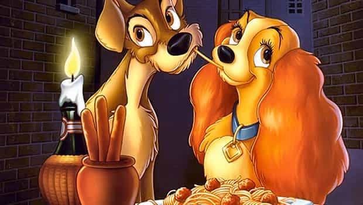

< < < Back
Unconditional Love From A Woman Is Impossible – Return Of Kings
There’s a feminist myth called “unconditional love” floating around our culture. You are EXPECTED to love your girl no matter what. To love her more than you love yourself. We all know on some level that this is bollocks poured on top of our heads by mind-washing feminist propaganda, but many of us continue to propagate it anyway. “The one” myth is a gangrene that will eat your soul if you buy into it.
I believe that a person can come close to unconditional love in three cases: your love for your parents, for your children, and perhaps for the first dog you raised from pup. They all are literally willing to walk into fire for you.

Loyalty and friendship are concepts no woman can ever fully understand. It’s not deliberate, it’s in their nature—it’s evolution. A woman will unconditionally love her offspring only—if she is a good mother. Aside from this, women love conditionally and opportunistically. You can’t change that. But once you know it, you can act accordingly.
Consider the stone age if you will: Men hunting during the dawn of humanity needed other men of the tribe to watch their backs during the hunt. That’s why men are naturally inclined to build strong friendships where loyalty is a real value. One weakness that stems from it is that men take things at face value. Especially with women. Only through their own experiences (both successes and failures) men learn to take what women say and do with a pinch of salt.
Evolutionarily speaking, friendship and loyalty makes sense for men. For women, not so much. And this is why: a tribe’s women, safely shielded by the cave walls, did not need that kind of protection. Their only real fear was each other’s competition, roughly known as SMV. They fine-tuned themselves in the art of manipulating both men and women for obvious reasons.
I am convinced this is why female reasoning is based on emotions. By employing a flatulent burst of emotions, a woman most likely gets what she wants. This obvious manipulation is not necessarily a conscious decision, more likely it’s embedded in her nature. It follows that women are incapable of loyalty and friendship towards men, just as men are incapable of giving birth.
The reason people accept the existence of unconditional love script is childhood. Your parents loved you with all their hearts and the template for what love is supposed to be was set during those early years. You loved them back in the same unconditional manner. And it was great. But your woman is not your mom. She is a fickle-minded person who’s most likely looking out for a prettier branch to grab right now.
Make no mistake, even when a woman is deeply “in love” with you, her love is not unconditional.
Most likely she’s madly in love with you because you are the man who rocks her world.
Keep being that man if she makes your life better, or discard her if she doesn’t. So, she loves you because you’re the best high-quality man she can get, but this sooner or later be subject to change. If at some point she feels she can get a man perceived as higher quality than you, her love for you will decrease exponentially. This is what we call conditional love—a woman’s love. Don’t worry about it, be aware that in a 5-mile radius there are at least 100 hotter girls more than willing to give it up for the smooth seducer that you are.
This is what feminists, betas, and manginas will never understand: in the vast majority of cases, it’s just “the one” you’re banging now, “the one” you’ll be banging tomorrow, and “the one” you banged yesterday. If you’re the most alpha a girl can get, you are “the one” for her (hypergamy at play here) even or should I say especially if you dump her.
Just like you have your own template for what love should be, her father is the childhood template for what a real man should be like. One method I found to be effective in seducing a girl is to emulate some of her father’s traits—the good traits. Ask her about her father. The more she talks about him, the more ammo she’s giving you on how to seduce her. This works mainly if she has a good relationship with her father.
Unconditional love is seamlessly entwined with “the one” chimera in our media and culture. Most men walk aimlessly through life searching for “the one.” They can’t find her and perceive themselves as failures. It’s quite sad. But you will not be one of those men.
Read More: Thoughts On The Red Pill From A 21-Year-Old Student


{kind=link}